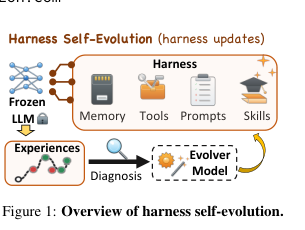
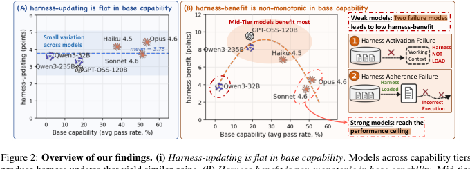
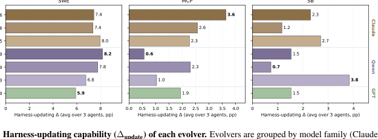
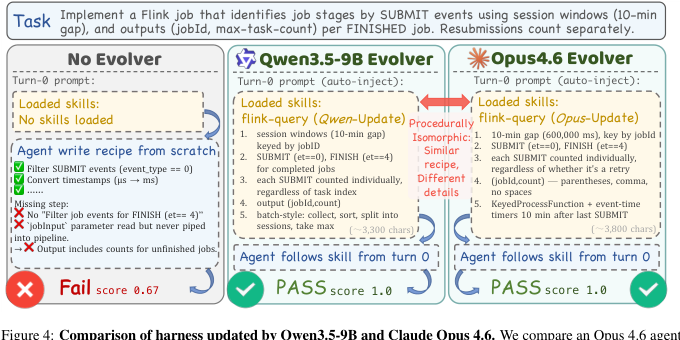
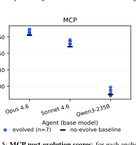
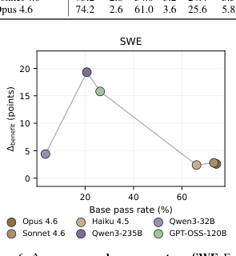
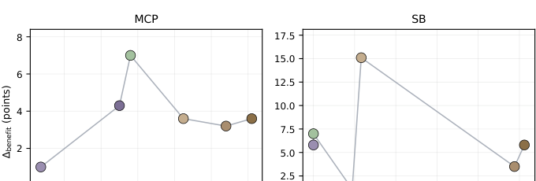
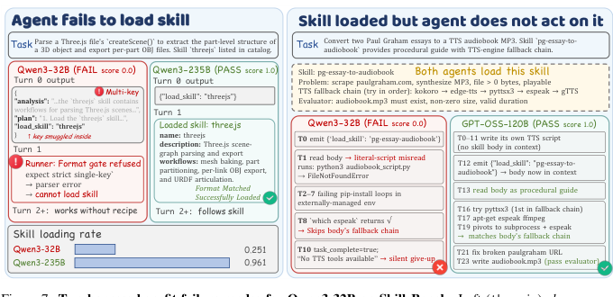
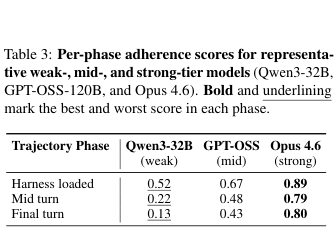

Harness Updating Is Not Harness Benefit: Disentangling Evolution Capabilities in Self-Evolving LLM Agents
这篇论文把 harness self-evolution 拆成两个不同能力：evolver 是否能写出有用的 persistent harness updates，以及 task-solving agent 是否真的能从更新后的 harness 中受益。核心结论很反直觉：harness-updating 对 base capability 近似“平”，小模型 evolver 也能写出可用更新；harness-benefit 则非单调，弱模型常输在 harness activation 和 long-horizon adherence，而不是输在 evolver 不够强。
1. 研究动机：自进化增益到底来自谁？
LLM agent 越来越像“固定模型 + 可编辑外部 harness”的系统。harness 包括 prompts、skills、memories、tools、execution policies 等，它决定模型看见什么、怎样调用工具、怎样恢复错误。很多 self-evolving agent 把执行经验写回 harness，但端到端 pass rate 混合了三件事：base model 本来有多强、evolver 能不能写出好 harness、agent 能不能遵守新 harness。
过去评估的问题
如果一个系统进化后分数上升，无法判断是 evolver 写得好，还是 agent 本来强、能更好利用更新；也无法知道应把预算投给 evolver 还是 solver。
论文的拆解
作者独立改变 task-solving agent 与 evolver，显式测量 $\Delta_{update}$ 与 $\Delta_{benefit}$，避免把“写更新”和“用更新”混成一个指标。
工程意义
结论指向一个更实用的系统设计：evolver 不必总是 frontier model；更值得训练的是 agent 对 harness 的调用、遵守和长程执行能力。


2. 方法：把 harness evolution 写成可分离的能力指标
论文没有提出新的 harness 表示，而是构造一个 controlled analysis。核心做法是固定初始 harness、task stream、prompt template、trajectory window、turn limit 和 evolution budget，只改变 LLM backbone，并把 solver-side 与 evolver-side 分开测。
2.1 Agent 与 Evolver 的状态转移
在第 $t$ 个 evolution step，agent 定义为固定模型与当前 harness 的二元组：
$$A_t=(f,H_t).$$其中 $f$ 是不更新权重的 model backbone，$H_t$ 是 prompts、skills、memories 等可编辑 harness state。evolver $e$ 根据上一版 harness 与执行证据生成更新：
$$\Delta H_t=e(H_{t-1},D_t),\qquad H_t=\operatorname{Apply}(H_{t-1},\Delta H_t).$$注意这里更新的是 external harness，不是 parametric fine-tuning 或 RL 权重更新。
2.2 Solve-Evolve Protocol
给定 task batch $\mathcal{X}_t$，旧 agent $A_{t-1}$ 对每个任务 $x$ 产生 execution trajectory 与最终输出：
$$(\tau_{t,x},y_{t,x})=\operatorname{Solve}(A_{t-1},x).$$执行证据集合是：
$$D_t=\{(x,\tau_{t,x},y_{t,x}):x\in\mathcal{X}_t\}.$$evolver 使用 $D_t$ 更新 harness，得到下一轮 agent $A_t=(f,H_t)$。这个循环重复 $T$ 步，最终 harness 为 $H_T$。
2.3 三个指标
对 task set $\mathcal{X}=\bigcup_{t=1}^{T}\mathcal{X}_t$，初始 harness 下的 base capability 是：
$$M_{base}(f)=J_{\mathcal{X}}(f,H_0).$$让模型 $f$ 与 evolver $e$ 共同跑完整 evolution 得到 $H_T^{(f,e)}$，pairwise gain 为：
$$\Delta(f,e)=J_{\mathcal{X}}(f,H_T^{(f,e)})-M_{base}(f).$$evolver-side 的 harness-updating capability 是 anchor agents $\mathcal{F}^{\star}$ 上的平均增益：
$$\Delta_{update}(e)=\frac{1}{|\mathcal{F}^{\star}|}\sum_{f\in\mathcal{F}^{\star}}\Delta(f,e).$$agent-side 的 harness-benefit capability 是固定 anchor evolvers $\mathcal{E}^{\star}$ 中能带来的最大增益：
$$\Delta_{benefit}(f)=\max_{e\in\mathcal{E}^{\star}}\Delta(f,e).$$Base
在 $H_0$ 下测每个模型的 pass rate，得到 $M_{base}(f)$。
Evolver-side
固定 Opus 4.6、Sonnet 4.6、Qwen3-235B 三个 anchor agents，替换七个 evolvers。
Agent-side
固定 Opus 4.6、Sonnet 4.6、Qwen3-235B 三个 anchor evolvers，替换六个 task-solving agents。
Failure Diagnosis
在 SkillsBench 上细拆 skill loading、skill following 与 phase-level adherence drift。
3. 实验设计与复现细节
实验覆盖三类 agentic capability：软件工程修复、真实 MCP server 工具编排、skill-based execution。评价采用 in-situ protocol：同一 task stream 既驱动 evolution 又计分，但每个 task 的分数在其 evidence 用于更新 $H_t$ 之前锁定，因此不会被“从自己失败中学到的更新”反向污染。
| Substrate | 任务数 | 领域/资源 | 评分方式 | Evolvable harness artifacts |
|---|---|---|---|---|
| SWE-bench Verified | 500 | 12 个 GitHub repositories；codebase snapshot、issue description、hidden tests | patch 是否通过 fail-to-pass 与 pass-to-pass tests 的 binary resolved score | 仅允许编辑 skills/ |
| MCP-Atlas | 500 | 36 个 MCP servers、220 tools；每题需 3-6 次 tool calls | claims-based rubric；所有 claims 满足才算 strict pass，也报告 continuous claim score | 允许编辑 skills/、prompts/system.md，并 append-only 更新 memory/*.jsonl |
| SkillsBench | 86 | 11 个 task domains；workspace files 与 deterministic verifier | per-task binary score，按 Terminal-Bench 设置平均 5 trials | 仅允许编辑 skills/；no-evolution baseline 从空 skill set 开始 |
Table 4 重建：三套 benchmark 的规模与资源。工具目录和 evaluation files 对所有 benchmark 都是 read-only。
模型网格
- Agent-side 六个 backbones：Claude Opus 4.6、Claude Sonnet 4.6、Claude Haiku 4.5、Qwen3-235B-A22B、Qwen3-32B、GPT-OSS-120B。
- Evolver-side 在上述六个模型外，额外加入最小模型 Qwen3.5-9B。
- 所有模型通过 official API 或 inference endpoint 调用；论文不更新模型权重。
固定因素
- 同一 benchmark 内 task-solving agents 使用同一 solver system prompt。
- 所有 evolver backbones 使用同一 fixed evolver system prompt 与 per-cycle user message wrapper。
- 所有 agent-evolver pair 共享初始 $H_0$、task stream $\mathcal{X}$、evolution budget $\beta$ 与 per-task turn limit。
复现时必须锁定的变量
- 下载公开代码：
https://github.com/A-EVO-Lab/a-evolve/tree/release/harness-evolution。 - 准备 SWE-bench Verified 500 tasks、MCP-Atlas 500-task public subset、SkillsBench 86 tasks。
- 为每个 benchmark 设置相同 initial harness、task order、turn limit、trajectory window 与 allowed writable scope。
- 按 Table 8/9 设置 SWE 与 MCP solver prompts；SkillsBench solver 不使用 system prompt。
- 按 Table 10/11 设置 fixed evolver prompt 与 per-cycle evidence wrapper。
- 先计算 no-evolution baseline，再分别跑 evolver-side matrix 与 agent-side matrix。
4. 实验结果：Updating 与 Benefit 明显解耦
论文最有价值的证据不是“self-evolution 有提升”，而是提升来源的分解：evolver 产生有效更新的能力并不随 base capability 单调增长；agent 从更新中获益的能力也不是越弱越有提升空间。
4.1 Evolver-side：$\Delta_{update}$ 对 base capability 近似平坦


flink-query case study：Qwen3.5-9B 与 Opus 4.6 都写出过程同构的 skill，把同一 Opus agent 从 0.67 提到 1.0。| Evolver | SWE $\Delta_{update}$ | MCP $\Delta_{update}$ | SB $\Delta_{update}$ | 解释 |
|---|---|---|---|---|
| Opus 4.6 | 7.4 | 3.6 | 2.3 | MCP 上最好，但不是三项全胜。 |
| Sonnet 4.6 | 7.4 | 2.6 | 1.2 | 整体可用但 SB 较低。 |
| Haiku 4.5 | 8.0 | 2.3 | 2.7 | SWE/SB 都接近最好。 |
| Qwen3-235B | 8.2 | 0.6 | 1.5 | SWE 最好、MCP 最差，说明 base capability 不足以预测 updating。 |
| Qwen3-32B | 7.8 | 2.3 | 0.7 | 能写出有效更新，但在 SB 最低。 |
| Qwen3.5-9B | 6.8 | 1.0 | 3.8 | 最小模型，却在 SB 上最好。 |
| GPT-OSS-120B | 5.9 | 1.9 | 1.5 | SWE 最低但仍有正增益。 |
Figure 3/Table 5 重建。单位为 percentage points；粗体表示每个 benchmark 内的最高或最低 $\Delta_{update}$。
4.2 Post-evolution performance 更受 solver base capability 控制

Extreme pairing 仍然偏向强 solver
Appendix Table 6 把最弱 anchor agent 配最强 evolver、最强 anchor agent 配最差 evolver。即便这样，强 solver 仍在 SWE/MCP/SB 上领先 35.2、32.3、18.6 pp。这支撑作者的设计建议：能力预算优先给 task-solving agent，而不是一味升级 evolver。
4.3 Agent-side：$\Delta_{benefit}$ 非单调
| Model | SWE | MCP | SB | |||
|---|---|---|---|---|---|---|
| Base | $\Delta$ | Base | $\Delta$ | Base | $\Delta$ | |
| Qwen3-32B | 3.6 | 4.4 | 3.6 | 1.0 | 0.0 | 5.8 |
| Qwen3-235B | 20.7 | 19.3 | 25.0 | 4.3 | 4.7 | 1.1 |
| GPT-OSS-120B | 26.2 | 15.8 | 28.0 | 7.0 | 0.0 | 7.0 |
| Haiku 4.5 | 66.0 | 2.4 | 42.4 | 3.6 | 5.8 | 15.1 |
| Sonnet 4.6 | 73.2 | 2.8 | 54.0 | 3.2 | 24.4 | 3.5 |
| Opus 4.6 | 74.2 | 2.6 | 61.0 | 3.6 | 25.6 | 5.8 |
Table 1 重建：Base pass rate 与 harness-benefit $\Delta_{benefit}$。SWE/MCP 上峰值出现在中间能力段；SB 低 base 区间更 noisy。


4.4 弱模型低受益：activation 与 adherence 两个瓶颈
| Model | SLR | HFR | LPR | 含义 |
|---|---|---|---|---|
| Qwen3-32B | 0.251 | 0.142 | 0.023 | 既常常没把 skill 正确加载进 context，也很少按 loaded skill 执行。 |
| GPT-OSS-120B | 0.446 | 0.442 | 0.040 | activation 改善但仍不稳定。 |
| Haiku 4.5 | 0.794 | 0.600 | 0.099 | 中强模型开始能较稳定调用和遵守 harness。 |
| Qwen3-235B | 0.961 | 0.350 | 0.022 | 最清楚的分离：能加载 skill，但不充分遵守。 |
| Sonnet 4.6 | 0.959 | 0.730 | 0.145 | activation 与 adherence 都高。 |
| Opus 4.6 | 0.957 | 0.757 | 0.177 | 遵守能力最高，skill-loaded pass rate 也最高。 |
Table 2 重建。SLR = skill-load rate；HFR = harness-following rate；LPR = pass-when-loaded rate。


5. Figure / Table 导航
原 PDF 的嵌入图片被抽取成多个小对象，因此本页使用整页渲染图裁切关键区域。裁切图用于定位论文证据，关键数值表已在 HTML 中重建，便于检索和复用。
| 编号 | 本页资产 | 论文位置 | 作用 |
|---|---|---|---|
| Figure 1 | assets/crops/figure-1-overview.png | Page 1 | 定义 harness self-evolution 的系统循环。 |
| Figure 2 | assets/crops/figure-2-findings.png | Page 2 | 总览两条主发现与弱模型 failure modes。 |
| Figure 3 / Table 5 | assets/crops/figure-3-update-capability.png | Page 5 / Page 14 | 展示 $\Delta_{update}$ 平坦性；HTML 重建了主要数值。 |
| Figure 4 | assets/crops/figure-4-case-study.png | Page 6 | Qwen3.5-9B 与 Opus 4.6 写出过程同构 skill 的案例。 |
| Table 1 | assets/crops/table-1-benefit.png | Page 7 | Base pass rate 与 $\Delta_{benefit}$ 主表；HTML 已重建。 |
| Table 2 | assets/crops/table-2-slr-hfr-lpr.png | Page 7 | SLR/HFR/LPR failure diagnosis；HTML 已重建。 |
| Figure 7 / Table 3 | assets/crops/figure-7-failure-modes.png, assets/crops/table-3-adherence.png | Page 8 | 展示 activation failure、adherence failure 与 phase drift。 |
| Table 7 | assets/crops/table-7-agent-matrix.png | Page 16 | 完整 agent-side matrix，作为 $\Delta_{benefit}$ 的来源。 |
6. 复现清单
这篇论文的复现难点不是公式，而是 agent benchmark infrastructure 与商用/开源模型端点的一致性。论文给出的 setup 足够支撑中等强度复现，但仍需代码仓库中的 runner 配置补齐 exact task stream、budget 与服务端版本。
论文已给出的细节
- 公开 code URL。
- 三套数据集规模、资源类型与评分函数。
- agent/evolver 模型列表与 anchor sets。
- SWE/MCP solver seed prompts 与 fixed evolver prompt。
- editable harness scope：SWE/SB 只写 skills，MCP 可写 skills、system prompt、memory。
- 完整 evolver-side 与 agent-side pass-rate matrices。
- HFR rubric extraction、trajectory judge、phase-level adherence judge 的 prompt templates。
需要从代码或运行环境确认
- 精确 task order、batching 与 $T$ / $\beta$ 设置。
- 模型 API 版本、sampling parameters、rate limits 与失败重试策略。
- MCP servers 的 live state 与工具响应稳定性。
- trajectory canonicalization 细节，以及 HFR judge 的调用温度和解析容错。
- SkillsBench 5 trials 的随机性控制和 workspace reset 策略。
建议复现路径
- 先只复现 SkillsBench：成本低，且能直接验证 activation/adherence 两个 failure modes。
- 跑 no-evolution baseline，确认 SLR/HFR/LPR logging pipeline 能复现 Table 2 的量级。
- 加入三个 anchor evolvers，重建 Table 7 的 SkillsBench block。
- 再扩展到 MCP-Atlas，优先检查 tool schema validation、pagination 和 claim scoring。
- 最后跑 SWE-bench Verified，因为成本高且 patch evaluation 环境更重。
7. Reviewer Critique
论文的贡献在于把 self-evolution 的“谁带来增益”问题拆清楚，而不是再提出一个新 agent system。作为 reviewer，我会认为它的问题设定很重要，证据也有解释力，但对外部效度和成本维度还可以更强。
优点
- 指标设计干净：$\Delta_{update}$ 与 $\Delta_{benefit}$ 分别回答 evolver 与 solver 的能力问题。
- 模型网格横跨 Claude、Qwen、GPT-OSS，并加入 Qwen3.5-9B 做小 evolver 反例。
- 三个 benchmark 覆盖 code repair、MCP tool use、skill execution，避免只在单一 substrate 上下结论。
- failure analysis 不止 qualitative case，还给出 SLR/HFR/LPR 与 phase-level adherence scores。
不足与威胁
- in-situ evaluation 虽避免同一 task 先学习后计分，但仍与 task stream/order 强绑定；换 order 后结论稳定性需要更多 ablation。
- evolver 成本没有系统报告：小 evolver 可用是好消息，但 latency、token cost、failure retry 对部署很关键。
- harness artifact 类型不完全对称：SWE/SB 主要是 skills，MCP 还允许 prompts/memories，因此跨 benchmark 机制可能不完全一致。
- HFR 依赖 Claude Sonnet 4.6 judge；虽然 blinded，但 judge bias、rubric extraction error 与 inter-judge agreement 没有充分展开。
- 模型命名包含未来/厂商版本，复现者需要确认 API snapshot，否则结果可能随服务端模型更新漂移。
我希望看到的 ablations
- 固定 solver，比较“无 evolver / weak evolver / strong evolver / human-written skill”的同成本版本。
- 显式扫 evolution budget $\beta$，看小 evolver 是否只是需要更多 cycles。
- 把 skill loading protocol 做成更宽松/更严格，量化 activation failure 是否来自 runner interface 设计。
- 把 loaded harness 压缩、分段召回、强制 checklist execution，测试 adherence 是否可由 harness engineering 缓解。
部署风险
harness 是 persistent state，因此错误 lesson、不安全 tool-use rule、敏感信息或偏见指令都可能跨任务传播。真实系统需要 update audit、rollback、人类审批、隐私边界和数据保留 consent；这部分论文在 ethics statement 中提醒了风险，但没有实证评估。
8. 对我的研究方向的启发
如果关注 agent、RLVR、自进化、questioner-solver、replay、diversity 与 evaluation，这篇论文最可迁移的点是：不要只优化“产出经验/技能”的模块，还要训练 solver 可靠地检索、加载、遵守和维护这些外部状态。
Agent Training
把 harness invocation 做成显式训练目标：给 catalog、让模型选择 artifact、按协议加载，并惩罚 multi-key action、隐式引用、加载后不读正文等失败。
RLVR / Replay
reward 不应只看 final answer，还应奖励阶段性 adherence：加载正确 skill、执行 contingent fallback、在中后段仍引用 harness 约束。
Diversity
evolver 质量差距小提示可以用便宜模型生成多样 harness candidates，再把预算投到 solver-side validation、adherence judge 与 replay filtering。
| 可迁移 insight | 可落地实验 |
|---|---|
| 更新者不一定要最强 | 用 small model 生成 skills/memories，用 strong solver 或 verifier 做 acceptance gate，比较 cost-normalized gain。 |
| 弱 solver 的主要问题是 harness-benefit | 设计 activation/adherence 两级 reward，将 skill-load format、artifact recall、long-horizon following 纳入训练集。 |
| final pass rate 不够诊断 | 每条 trajectory 记录 SLR、HFR、phase adherence、loaded-artifact pass rate，作为 agent evaluation dashboard。 |
| persistent harness 有安全外溢 | 为 self-evolution 系统加入 signed update、diff review、rollback、sensitive-info scanner 和 update TTL。 |